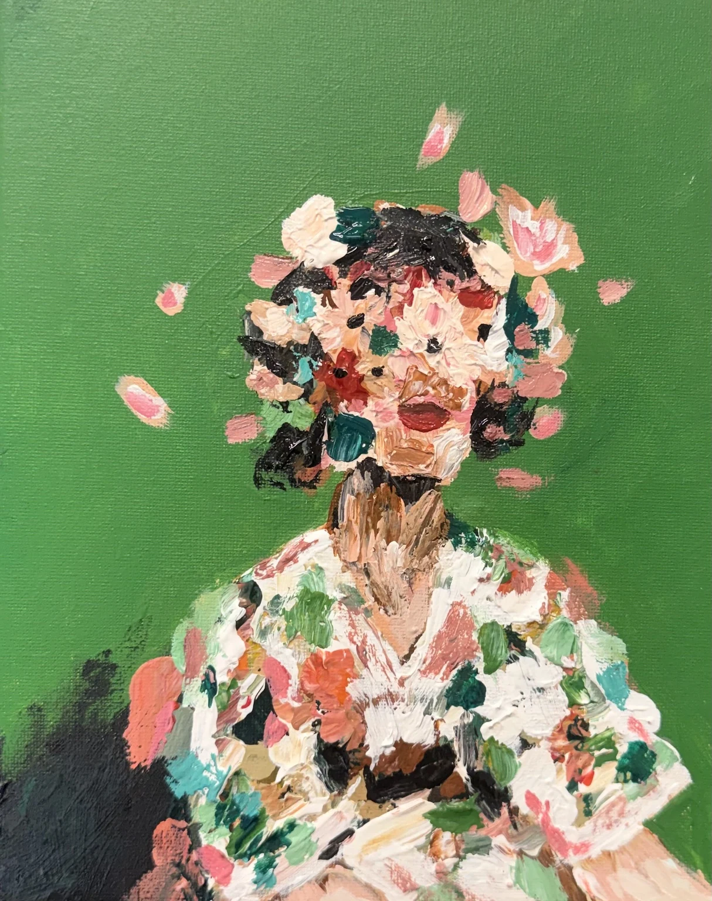
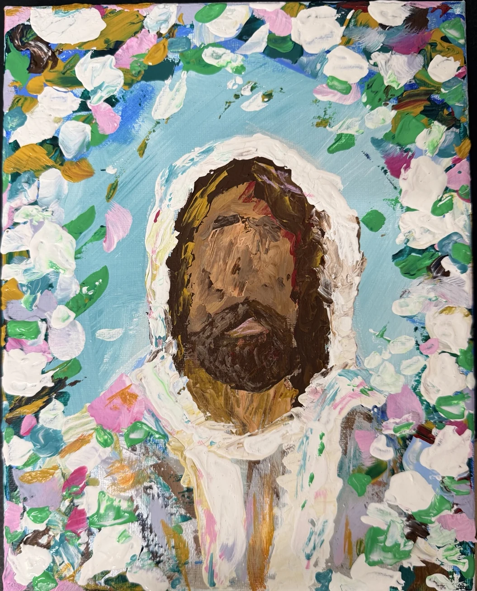
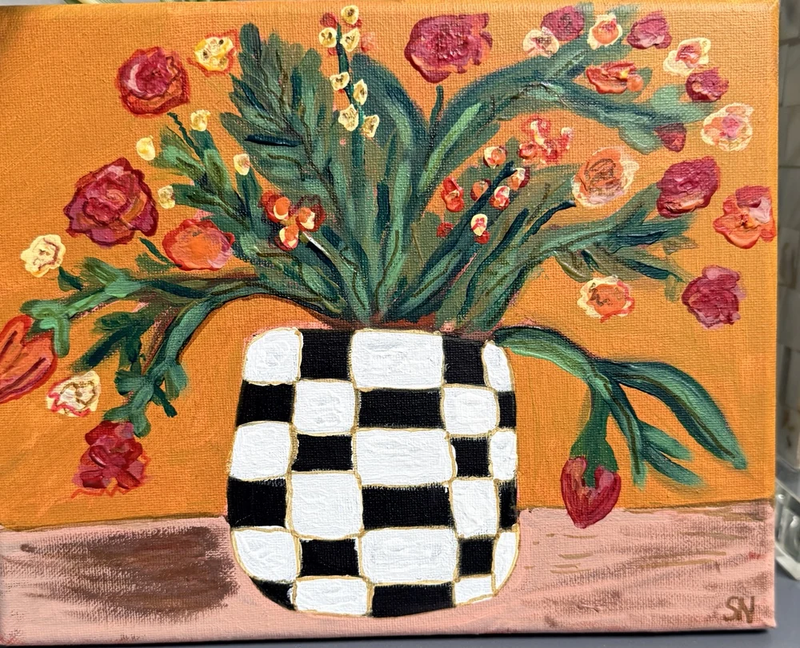

A little more
color in the
world.
Original paintings by Sarah Norris Gyening. A world of expressive portraits, flowers in bloom, and the moments that stay with us.

made with feeling.
Some things are better
felt than explained.
Color, memory, texture, and story. Every painting invites a pause—an opportunity to see something new, or recognize something familiar.
The collection.
Take your time. Look closely.
Find the piece that speaks to you.
Step inside the art.
Seven curated rooms. One unfolding exhibition. Choose a room and spend a little longer with each painting.

A digital exhibition room featuring photographs of Sarah's original paintings. Select a collection to change rooms; use the arrows to explore each work.
Made to be
seen. Felt.
Remembered.
From bold, layered brushstrokes to gentle landscapes, Sarah's paintings create space for emotion, reflection, and joy.
Meet the artistBehind every
brushstroke is
a story.
Sarah Norris Gyening creates expressive paintings inspired by color, texture, nature, and the human experience.
Moving between portraiture, florals, still life, landscape, and abstraction, her work invites viewers to slow down, look closer, and make their own connections.
These are original works, presented here to be discovered, appreciated, and shared.
Find art that
feels like yours.
Interested in a painting? Ask Sarah about its availability, size, materials, and collecting details. Prices are shared only when confirmed by the artist.
You'll be able to copy an inquiry message. A direct contact address has not yet been added to this website.
